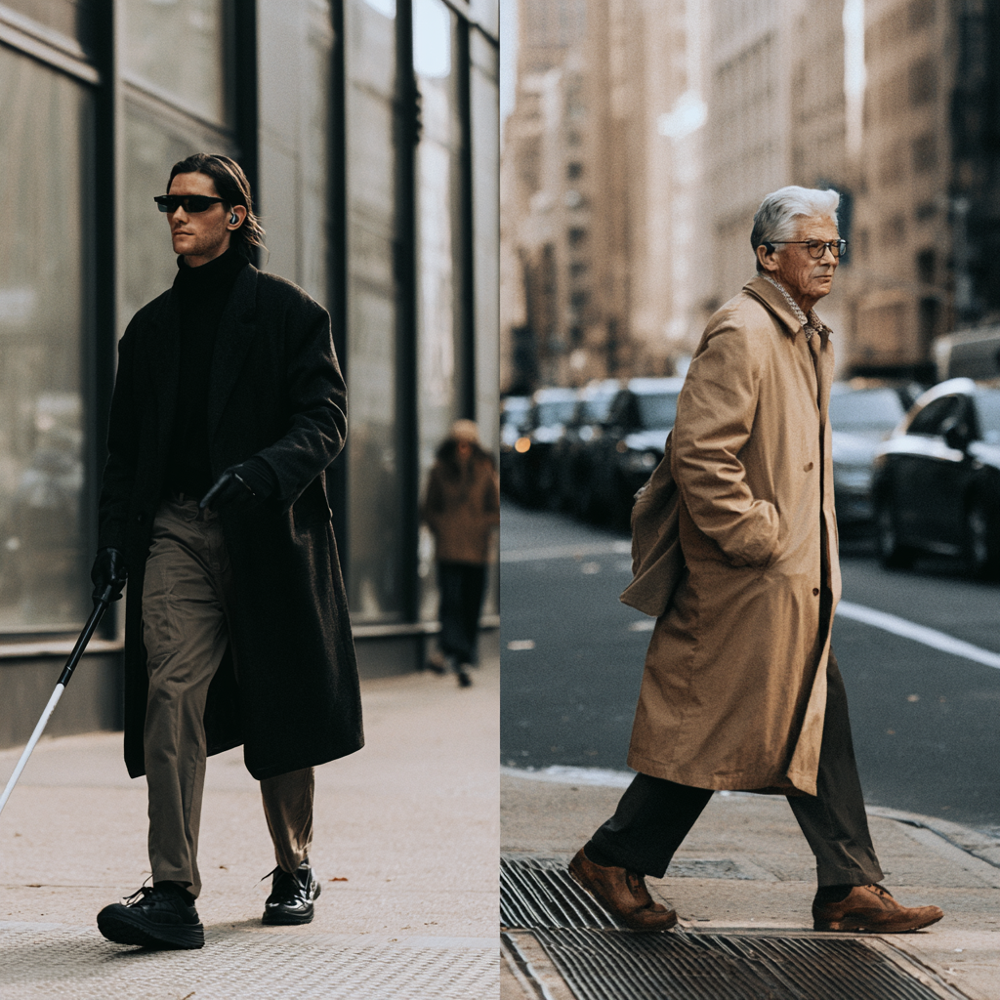
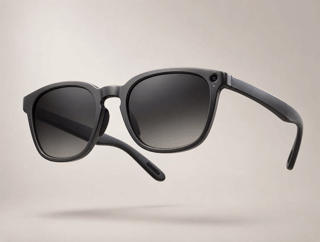

The white cane reads the ground. Viora watches everything above it.
A pair of everyday glasses with AI built in, it watches the space the cane cannot reach: head-height obstacles, objects entering your path, sudden steps and drop-offs. Every safety function runs on-device, standalone, on the glasses themselves: no smartphone, no network.
- 8 hours continuous detection
- Works without a phone
- Works without internet
- ~40 g everyday eyewear

What the cane cannot reach
Worldwide, 43 million people are blind and 295 million live with moderate-to-severe visual impairment.1 For them the white cane is essential — trained over years, trusted every day.
But a cane reads the ground. It cannot find a signboard at head height, a branch over the sidewalk, or a bicycle entering the path from the side. And when a fall happens, no one may know.
People with vision impairment are about twice as likely to fall as sighted peers. Falls are the second leading cause of unintentional injury death worldwide.2
The cane was never the problem. The empty space above it was. Viora fills it.

1. Lancet Global Health, 2020. 2. World Health Organization.
Everything on the glasses. All day on one charge.
Nothing stands between the hazard and the warning.
Detection, judgment, and alerting are complete on the glasses themselves. Leave the phone at home — the protection never notices, because it never depended on it.
No smartphone · No network · No cloud
Protection that is never rationed.
One morning charge keeps watch from your first step to your last, on ultra-low-power hardware we designed for exactly one purpose — this glass. Battery is our problem, not yours.
One charge · Every step · Zero thought
Protection that must be rationed is not protection.
Four moments that matter
Prevention, detection, and response — in one pair of ordinary-looking glasses.
-
Overhead obstacle
A signboard or branch at head height — invisible to a cane, directly in your path. Viora sees it at eye level and warns before contact.
- Beep alert
-
Sudden obstacle
A bicycle or scooter entering your path from the side. Viora tracks closing objects and alerts as they enter your field of view.
- Beep alert
-
Step & drop-off
Curbs, stairs, and level changes a camera alone can miss. A multi-zone time-of-flight sensor reads the ground plane and warns before your foot arrives.
- Beep alert
- Voice guidance
-
Fall response
The instant a fall is detected, a siren calls the people nearby while a designated guardian is alerted automatically, location included — help begins in seconds, from both sides.
- Siren alert
- Guardian alert

Everything happens on the glasses
Viora's camera, time-of-flight sensor, and motion sensor run through a detection pipeline entirely on the device. No cloud. No mobile data. No pairing required after initial setup.
Why that matters: safety shouldn't depend on a connection. If your phone is out of battery, left at home, or out of range, Viora keeps working.
Ultra-low-power sensing
Running a camera continuously on a face-worn device is a thermal and power problem, not only a software one. Viora's sensing engine waits in low-power standby, wakes on motion, captures a short burst, and returns to sleep — analysis continues at low power after the camera is already off.
The result: sustained surface temperature of 42.4 °C, below our 43 °C long-wear comfort target, and a power budget built for a full day of detection.
Alerts built for instant clarity
Alerts are engineered for instant clarity: a sharp beep lands first — instantly — then a short spoken cue says what and where. Tone spacing tightens as a hazard closes, left and right stereo cues give direction, and in spaces you already know well, you can silence alerts entirely.
8 m — hazard detected1 m — imminent
Instant clarity when it matters. Silence when it doesn't.
It looks like glasses, because it should
Assistive devices are abandoned for reasons that have nothing to do with capability: weight, complexity, and the way they mark the person wearing them.
Viora has no display, no visor, no visible apparatus. Components are distributed across both temples for balance, targeting roughly 40 grams. Physical buttons and voice commands keep it usable without sight, and wear detection activates protection automatically — nothing to remember, nothing to switch on.
- A visible camera-indicator LED
- No facial data ever stored
- A clear voice status the moment anything about the system changes — someone trusting their steps to a device deserves to know exactly where they stand
Viora doesn't just clear hazards from the path — it clears anxiety from the walk.

Blind-user model
Tinted lenses reduce glare and help minimize visual fatigue.
Low-vision model
Prescription-ready clear lenses help support remaining vision.
What we measured
Viora's detection stack was validated end-to-end on our first-generation development platform. These are measured results, with their test conditions.
| Metric | Result | Condition |
|---|---|---|
| Detection rate | 5.44 fps | 2.7× our real-time requirement |
| Distance estimation error | +1.5% at 5 m | Pitch-based ground projection; stable where height-based estimates fail |
| False alerts, static objects | Zero | Reduced from 40% before alert-policy gating |
| Sustained surface temperature | 42.4 °C | Below our 43 °C long-wear comfort target |
| Runtime model accuracy | Within 4% | Predicts battery life from a usage profile |
| Test coverage | 188 unit tests | All passing on real hardware |
Our fall-detection validation protocol targets the specificity levels reported for eyeglass-mounted IMU systems in peer-reviewed studies.
Every great accessibility invention outgrew its origin — the curb cut, the typewriter, the audiobook. Viora follows that lineage by design.
The same real-time AI that guards those who cannot see the hazard guards those who see it too late: older adults, who suffer the greatest number of fatal falls worldwide (WHO). Built for blindness. Engineered for the age wave.
Production platform. The measurements above identified a specific barrier to all-day operation: an always-on base load that capped runtime regardless of camera optimization. Our production board removes it — a single vision SoC whose NPU completes inference in 100 ms, inside a 0.5-second end-to-end alert budget, waking only in sub-second bursts.
Production design
| Product type | Blind-user model / Low-vision model |
|---|---|
| Sensing | Wide-angle camera, multi-zone time-of-flight (35° downward, 4 m range), 6-axis IMU, wear detection |
| Processing | Single vision SoC with on-device NPU (0.4 TOPS, INT8), RTOS, custom board developed in-house |
| Operation | Standalone after initial setup — smartphone and internet not required for detection and alerts |
| Battery | 8 hours in hazard-detection mode / 12+ hours in mixed daily use · dual cells, USB-C charging |
| Audio | Stereo speakers, MEMS microphones, distance-linked beeps and voice guidance |
| Companion app | iOS and Android — guardian alerts, settings |
| Weight | Targeting approximately 40 g |
| Lens options | Tinted / prescription-ready clear |
| Privacy | On-device processing; no facial data stored |
Specifications reflect the finalized production design; values are being confirmed through engineering validation ahead of launch.